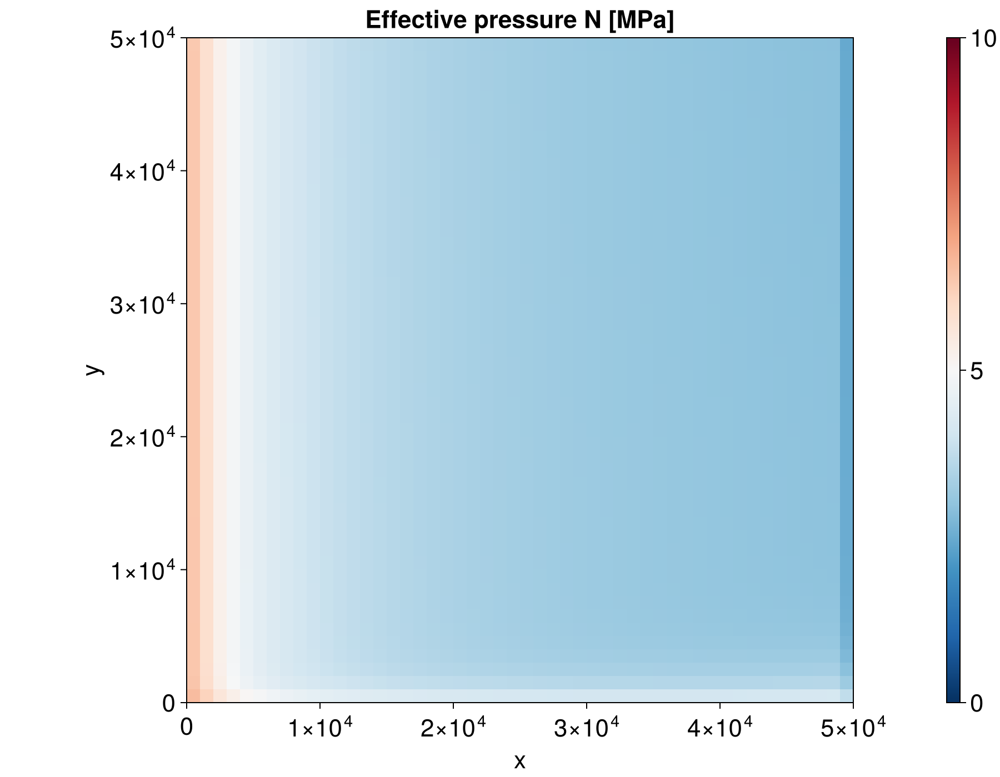

Plain-array grid (no Oceananigans)
This example shows ArrayHydroGrid: a grid backend built on plain Arrays, with no Oceananigans dependency. It is a drop-in swap for OGRectHydroGrid – the model, state, and simulation code below is exactly what you'd write for OGRectHydroGrid (see Kazmierczak et al 2024), since all physics code is written against the grid interface rather than against either backend directly (see Package structure in the API Reference).
This is the backend to reach for when embedding FastHydrology.jl inside a host model that already manages its own plain arrays (e.g. coupling into an existing ice-sheet model), where pulling in Oceananigans just for FastHydrology's grid would be unwanted weight.
We use a small synthetic ice-sheet geometry here, rather than real data as in the other examples, since the point is to show the grid swap itself.
using FastHydrology
using CairoMakie
T = Float64
Nx, Ny = 50, 50
xlims, ylims = (0.0, 50_000.0), (0.0, 50_000.0) # 50 km x 50 km domain((0.0, 50000.0), (0.0, 50000.0))Build the plain-array grid – same constructor signature as OGRectHydroGrid, no Oceananigans.RectilinearGrid underneath.
grid = ArrayHydroGrid(Nx, Ny, xlims, ylims; T = T)ArrayHydroGrid{Float64}(50, 50, 1000.0, 1000.0)A synthetic sloped ice-sheet geometry: thickness decreasing and bed deepening from left to right, uniform basal conditions, everywhere grounded.
mask = ones(T, Nx, Ny)
h = [2000.0 - 15.0 * i for i in 1:Nx, j in 1:Ny]
b = [-200.0 - 2.0 * j for i in 1:Nx, j in 1:Ny]
kappa = zeros(T, Nx, Ny) # hard bed everywhere
abs_v_b = fill(100.0 / (60^2 * 24 * 365.25), Nx, Ny) # 100 m/a basal sliding speed
A_visc = fill(1e-24, Nx, Ny)
mdot = fill(1e-6, Nx, Ny) # basal melt rate [kg m⁻² s⁻¹]50×50 Matrix{Float64}:
1.0e-6 1.0e-6 1.0e-6 1.0e-6 1.0e-6 … 1.0e-6 1.0e-6 1.0e-6 1.0e-6
1.0e-6 1.0e-6 1.0e-6 1.0e-6 1.0e-6 1.0e-6 1.0e-6 1.0e-6 1.0e-6
1.0e-6 1.0e-6 1.0e-6 1.0e-6 1.0e-6 1.0e-6 1.0e-6 1.0e-6 1.0e-6
1.0e-6 1.0e-6 1.0e-6 1.0e-6 1.0e-6 1.0e-6 1.0e-6 1.0e-6 1.0e-6
1.0e-6 1.0e-6 1.0e-6 1.0e-6 1.0e-6 1.0e-6 1.0e-6 1.0e-6 1.0e-6
1.0e-6 1.0e-6 1.0e-6 1.0e-6 1.0e-6 … 1.0e-6 1.0e-6 1.0e-6 1.0e-6
1.0e-6 1.0e-6 1.0e-6 1.0e-6 1.0e-6 1.0e-6 1.0e-6 1.0e-6 1.0e-6
1.0e-6 1.0e-6 1.0e-6 1.0e-6 1.0e-6 1.0e-6 1.0e-6 1.0e-6 1.0e-6
1.0e-6 1.0e-6 1.0e-6 1.0e-6 1.0e-6 1.0e-6 1.0e-6 1.0e-6 1.0e-6
1.0e-6 1.0e-6 1.0e-6 1.0e-6 1.0e-6 1.0e-6 1.0e-6 1.0e-6 1.0e-6
⋮ ⋱
1.0e-6 1.0e-6 1.0e-6 1.0e-6 1.0e-6 1.0e-6 1.0e-6 1.0e-6 1.0e-6
1.0e-6 1.0e-6 1.0e-6 1.0e-6 1.0e-6 1.0e-6 1.0e-6 1.0e-6 1.0e-6
1.0e-6 1.0e-6 1.0e-6 1.0e-6 1.0e-6 1.0e-6 1.0e-6 1.0e-6 1.0e-6
1.0e-6 1.0e-6 1.0e-6 1.0e-6 1.0e-6 1.0e-6 1.0e-6 1.0e-6 1.0e-6
1.0e-6 1.0e-6 1.0e-6 1.0e-6 1.0e-6 … 1.0e-6 1.0e-6 1.0e-6 1.0e-6
1.0e-6 1.0e-6 1.0e-6 1.0e-6 1.0e-6 1.0e-6 1.0e-6 1.0e-6 1.0e-6
1.0e-6 1.0e-6 1.0e-6 1.0e-6 1.0e-6 1.0e-6 1.0e-6 1.0e-6 1.0e-6
1.0e-6 1.0e-6 1.0e-6 1.0e-6 1.0e-6 1.0e-6 1.0e-6 1.0e-6 1.0e-6
1.0e-6 1.0e-6 1.0e-6 1.0e-6 1.0e-6 1.0e-6 1.0e-6 1.0e-6 1.0e-6The model and state constructors below are identical to the OGRectHydroGrid case – they only ever touch the grid through alloc_field and grid.Nx/grid.Ny/grid.dx/grid.dy, never Oceananigans directly.
longcoupwater (the stress-gradient-coupling smoothing width) has no safe default that works for every grid resolution, so it must be passed explicitly or KazmierczakHydroModel warns and falls back to 5.0 – see its docstring for how to choose a value from your own grid's resolution relative to ice thickness. 5.0 is well resolved at this grid's 1 km spacing.
model = KazmierczakHydroModel(grid, kappa, abs_v_b, A_visc, mdot; longcoupwater = 5.0, dissipation_verbose = false)
state = HydroState(grid, mask, h, b)
sim = SteadyStateSimulation(model, grid, state)
run!(sim)ArrayHydroGrid fields are plain Matrix, so we mask and build plot coordinates directly instead of using the Oceananigans-specific mask_field/visualize_field(::Field)/ visualize_grid(::OGRectHydroGrid) methods used in the other examples. The underlying visualize_field(x, y, data; kwargs...) method itself is backend-agnostic.
N_plot = copy(state.N) .* 1e-6 # makes N [MPa]
N_plot[mask .!= 1] .= NaN
xc = ((1:Nx) .- 0.5) .* grid.dx # cell-center coordinates
yc = ((1:Ny) .- 0.5) .* grid.dy
fig_N = visualize_field(xc, yc, N_plot; plot_title = "Effective pressure N [MPa]", colorrange = (0, 10))